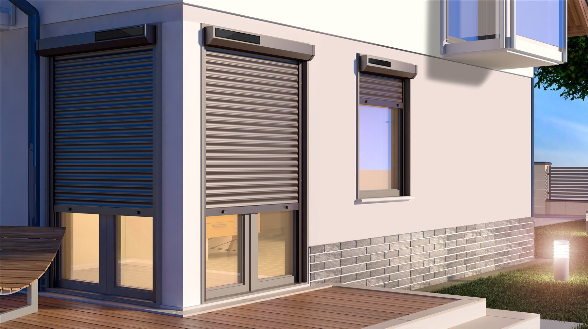
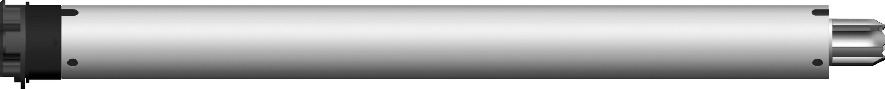
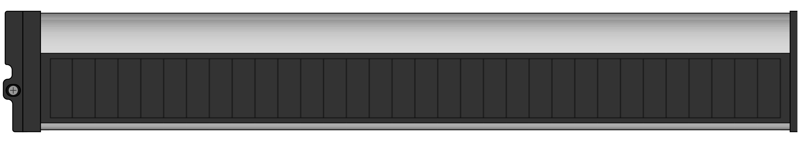
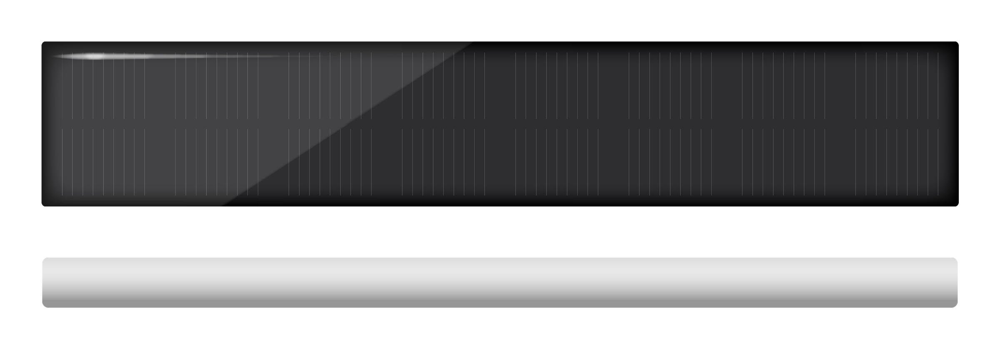
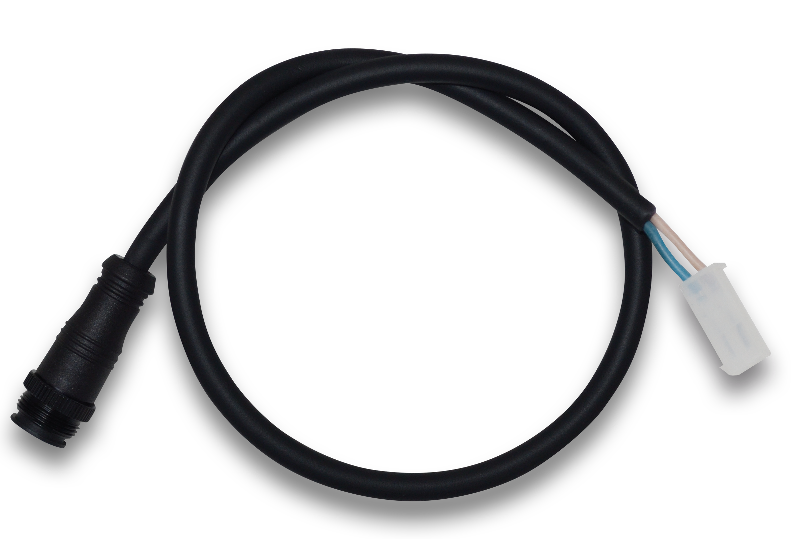
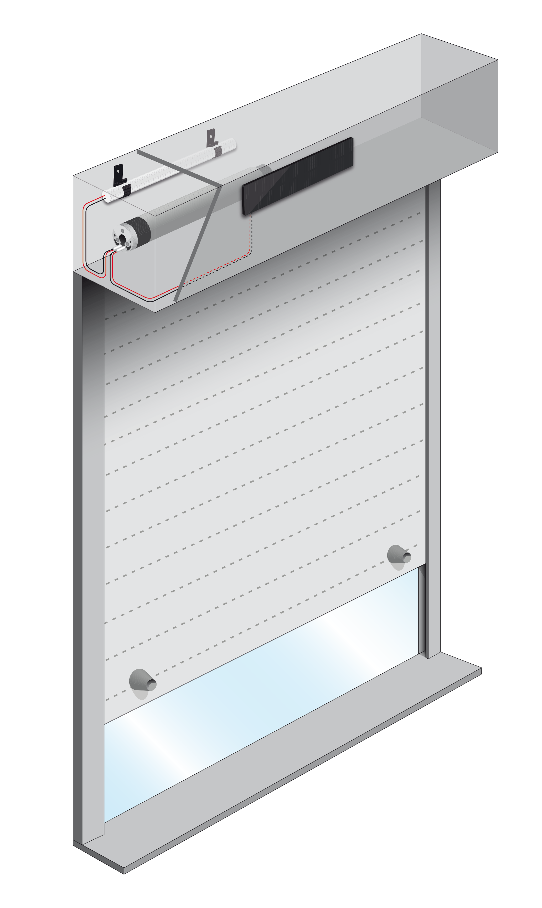
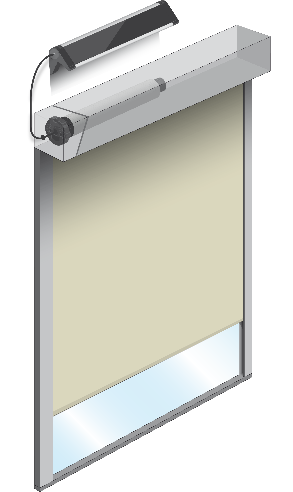
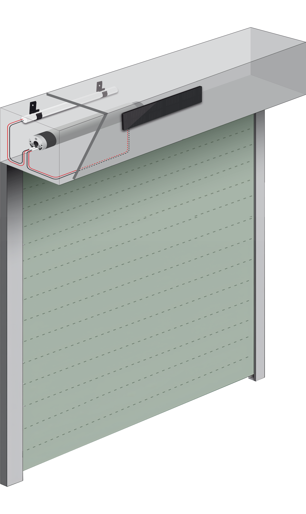
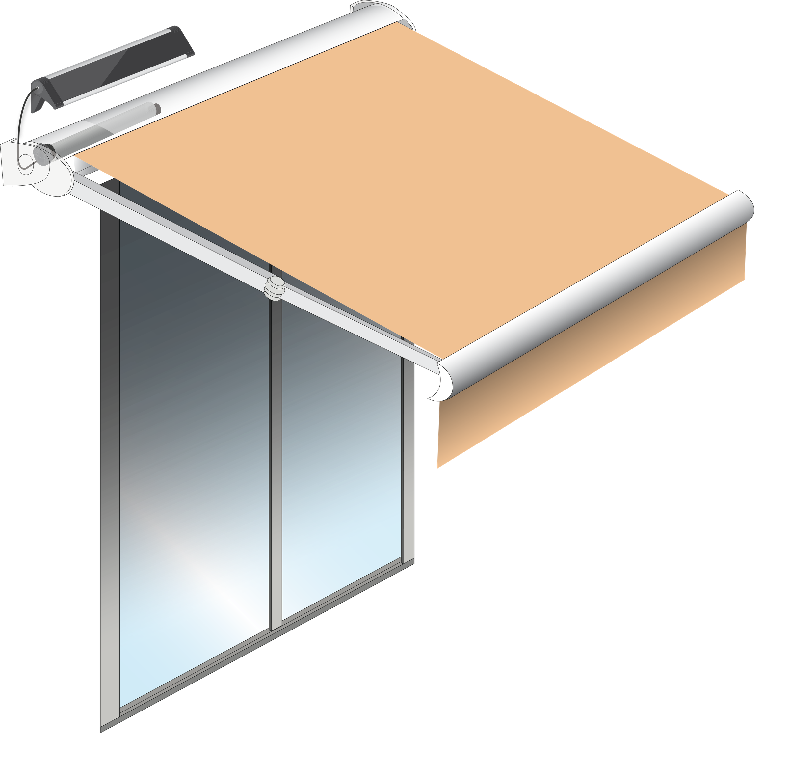
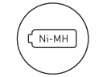

AUTONOMO to linia autonomicznych napędów rurowych GAPOSA przeznaczona do bram rolowanych, rolet, markiz, moskitier oraz wielu innych produktów wykorzystujących ten rodzaj napędu.
Rozwiązanie sprawdza się wszędzie tam, gdzie nie ma możliwości doprowadzenia zasilania sieciowego lub inwestor chce wykorzystać energię solarną.

Szeroka gama napędów
Oferta obejmuje 12 modeli napędów o różnych wymiarach i momentach obrotowych w zakresie od 1 do 50 Nm. Dzięki temu napędy można dopasować zarówno do lekkich osłon wewnętrznych, jak i do większych urządzeń zewnętrznych.
Kompletny system Plug&Play
Kompletny zestaw składa się z napędu, panelu solarnego z wbudowaną baterią lub panelu solarnego z baterią NI-MH oraz przewodu połączeniowego. Taka konfiguracja znacząco skraca czas montażu, a po połączeniu wszystkich elementów systemu napęd jest gotowy do pracy.




Przykładowe rozwiązania




Bezpieczeństwo i wygoda użytkowania
GAPOSA jest jednym z liderów rynku w zakresie systemów autonomicznych. Od dawna brak możliwości doprowadzenia zasilania sieciowego ograniczał klientom możliwość instalacji różnych systemów osłonowych, które znacząco poprawiają komfort życia lub pracy.
Precyzja gospodarowania energią oraz bezpieczeństwem użytkowania sprawiła, że wszystkie napędy wyposażone są w zaawansowaną detekcję przeszkód, a w pełni naładowany akumulator pozwala na działanie napędu do 45 dni bez słońca.
Bateria NI-MH do pracy w każdych warunkach
Właściwy dobór akumulatora oraz panelu solarnego umożliwia zasilanie napędów bez konieczności podłączania ich do sieci. Baterie niklowo-metalowo-wodorkowe wyróżniają się długą żywotnością i zachowują pierwotne parametry elektryczne przez długi czas.
Oznacza to, że są zdolne dostarczać prąd o wysokim natężeniu nawet po wielu cyklach ładowania i rozładowania ogniwa.

AUTONOMO - nowy standard w napędach rurowych
Można powiedzieć, że napędy solarne tworzą realną zmianę w sposobie montażu i użytkowania bram, rolet, markiz, moskitier oraz wielu innych produktów wykorzystujących napędy rurowe. Brak okablowania, szybka instalacja oraz niezależność energetyczna otwierają nowe możliwości zarówno w nowych inwestycjach, jak i przy modernizacji istniejących obiektów.